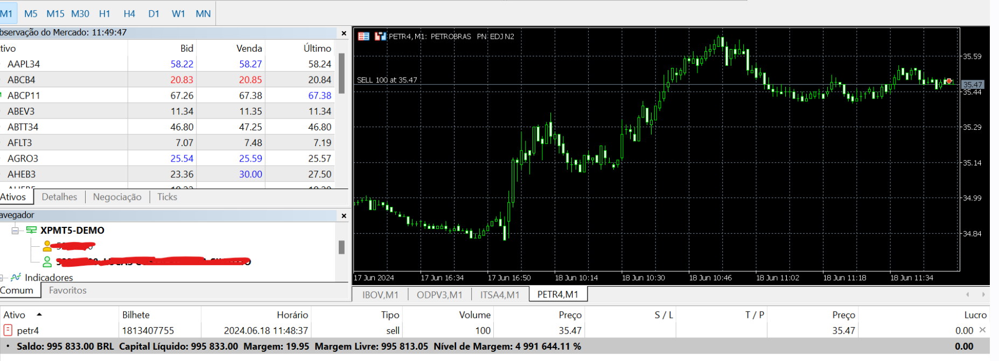
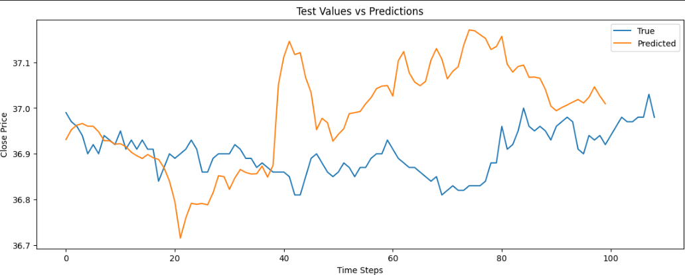

A coleta dos dados é realizada utilizando um script desenvolvido em Python e integrado com o terminal da Plataforma MetaTrader. Dessa maneira conseguimos extrair dados em tempo real.
O Python também é aplicado para tratamento dos dados e no modelo de machine learning.
Google e NASA utilizam Python extensivamente para análise de dados e desenvolvimento de modelos de machine learning.
Acompanhamento em tempo real das operações do mercado financeiro!


Em um intervalo de 10 minutos, realizamos um teste de previsibilidade, garantindo que os pontos iniciais e finais estejam alinhados com as informações reais.